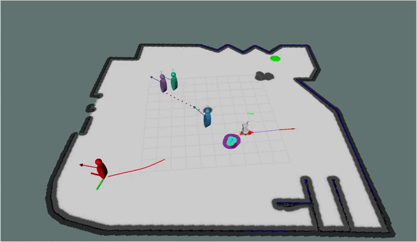
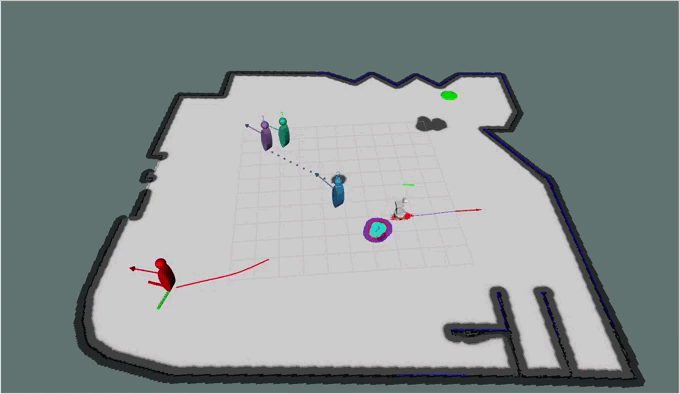
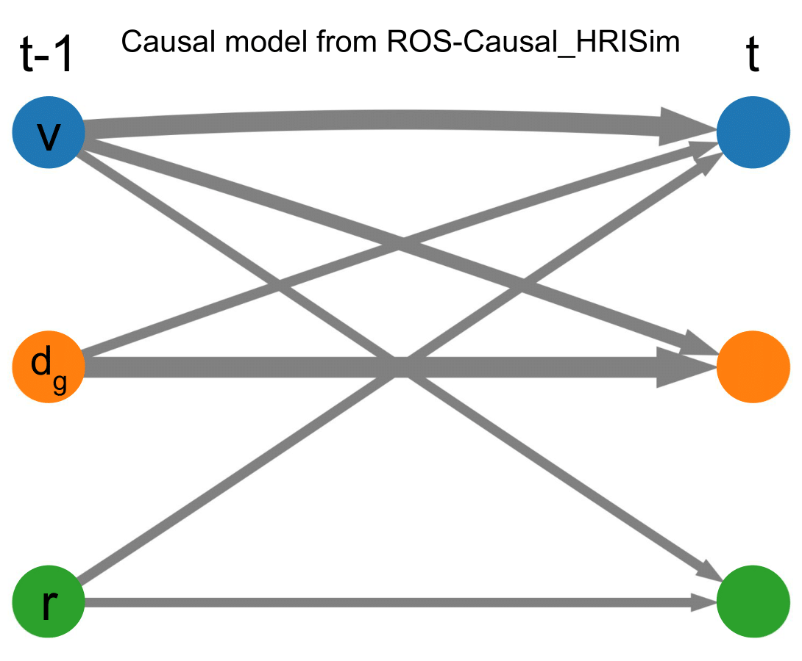

The growing integration of robots in shared environments—such as warehouses, shopping centres, and hospitals—demands a deep understanding of the underlying dynamics and human behaviours, including how, when, and where individuals engage in various activities and interactions. This knowledge goes beyond simple correlation studies and requires a more comprehensive causal analysis. By leveraging causal inference to model cause-and-effect relationships, we can better anticipate critical environmental factors and enable autonomous robots to plan and execute tasks more effectively. To this end, we propose a novel causality-based decision-making framework that reasons over a learned causal model to predict battery usage and human obstructions, understanding how these factors could influence robot task execution. Such reasoning framework assists the robot in deciding when and how to complete a given task. To achieve this, we developed also PeopleFlow, a new Gazebobased simulator designed to model context-sensitive human-robot spatial interactions in shared workspaces. PeopleFlow features realistic human and robot trajectories influenced by contextual factors such as time, environment layout, and robot state, and can simulate a large number of agents. While the simulator is general-purpose, in this paper we focus on a warehouse-like environment as a case study, where we conduct an extensive evaluation benchmarking our causal approach against a non-causal baseline. Our findings demonstrate the efficacy of the proposed solutions, highlighting how causal reasoning enables autonomous robots to operate more efficiently and safely in dynamic environments shared with humans.
ROS-Causal is a ROS-Based Causal Analysis Framework that facilitates robot onboard data collection and causal discovery in human-robot spatial interactions. It is composed by four main ROS nodes:
roscausal_robot: collects data from several rostopics related to the robot
(e.g., position, velocity, target position, etc.), and merge them into a single rostopic roscausal/robot
roscausal_human: collects data from several rostopics related to the human
(e.g., position, velocity, target position, etc.), and merge them into a single rostopic roscausal/human
roscausal_data: subscribes to the topics /roscausal/robot and /roscausal/human
and begins collecting data in a CSV file. Once the desired time-series length (rosparam) is reached, the node provides the
option to post-process the data and finally saves the CSV file into a designated folder
roscausal_discovery: performs causal discovery analysis on the collected data and publishes the result on
the roscausal/causal_model rostopic.
So far, it incorporates two causal discovery methods: PCMCI and F-PCMCI.
roscausal_data and roscausal_discovery ROS nodes operate asynchronously,
allowing the simultaneous execution of causal analysis on one dataset while continuing the collection of another.
In this paper,
we provide a detailed technical explanation of ROS-Causal,
accompanied by an experimental evaluation in a simulated environment: ROS-Causal_HRISim.
ROS-Causal_HRISim is a Gazebo-based human-robot interaction simulator that accurately replicates HRI scenarios
involving a TIAGo robot and multiple pedestrians. The pedestrians are controlled either by social forces or user
teleoperation (via keyboard). The simulator has been designed to facilitate the setup of real-life HRI scenarios
and the execution of causal analysis within them. For the latter, ROS-Causal has been integrated into the ROS-Causal_HRISim simulator.
 


To evaluate ROS-Causal, we designed an HRI scenario involving a TIAGo robot and a teleoperated individual, represented by the red manikin. The green dot indicates the target position for the person. For the causal analysis, we considered a predefined set of variables, comprising:

@article{castri2025causality,
title={Causality-enhanced Decision-Making for Autonomous Mobile Robots in Dynamic Environments},
author={Castri, Luca and Beraldo, Gloria and Bellotto, Nicola},
journal={arXiv preprint arXiv:2504.11901},
year={2025}
}